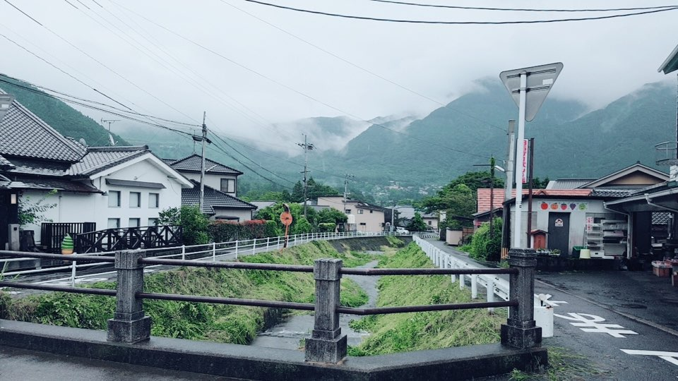
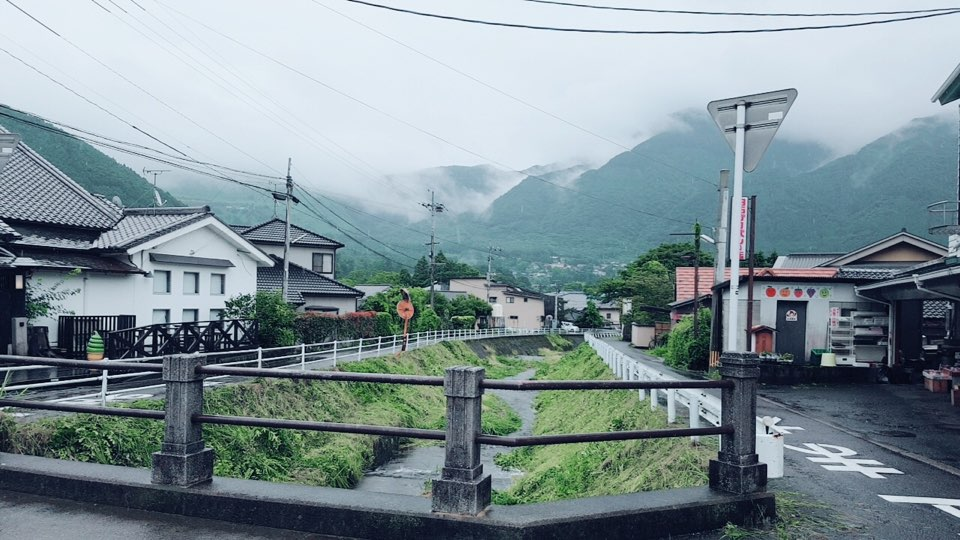
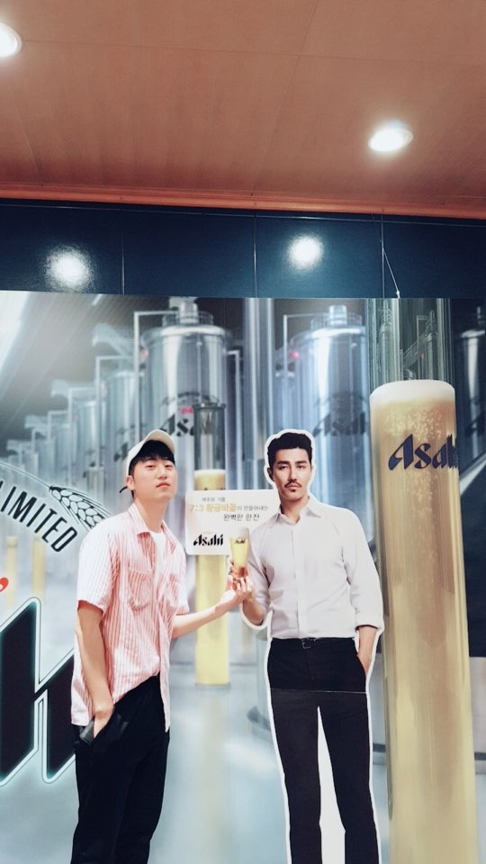
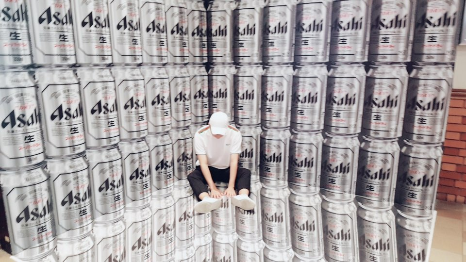
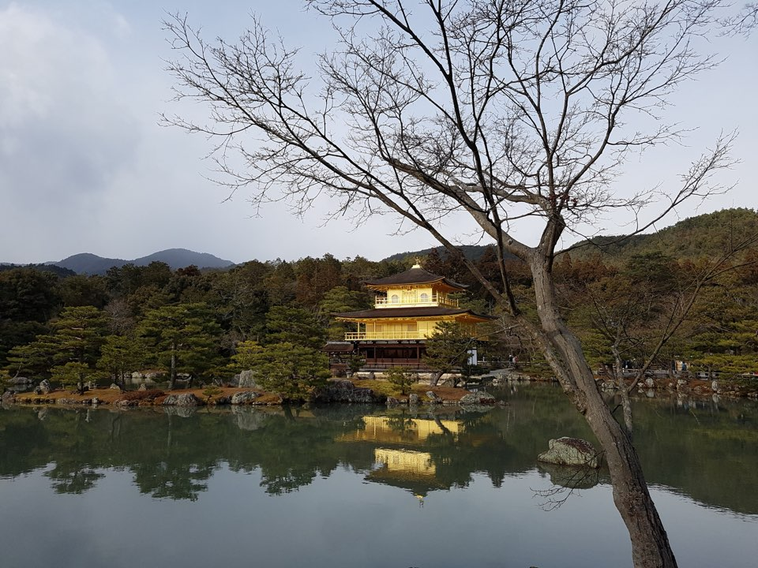
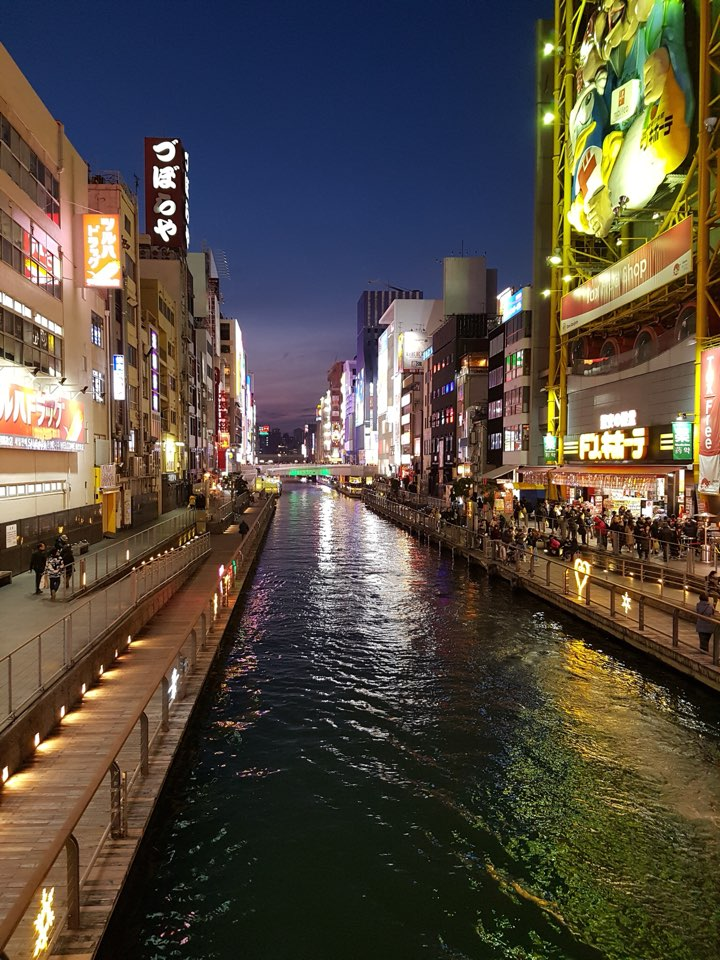
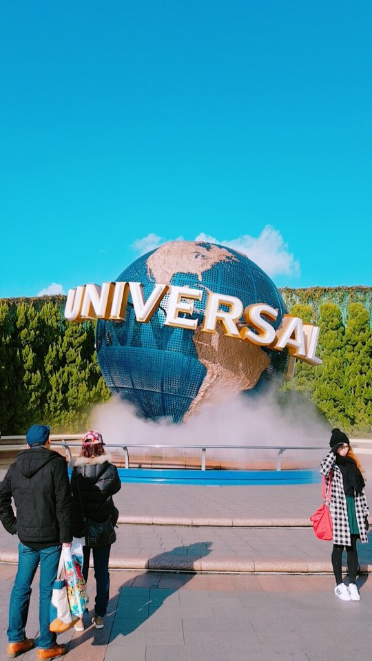
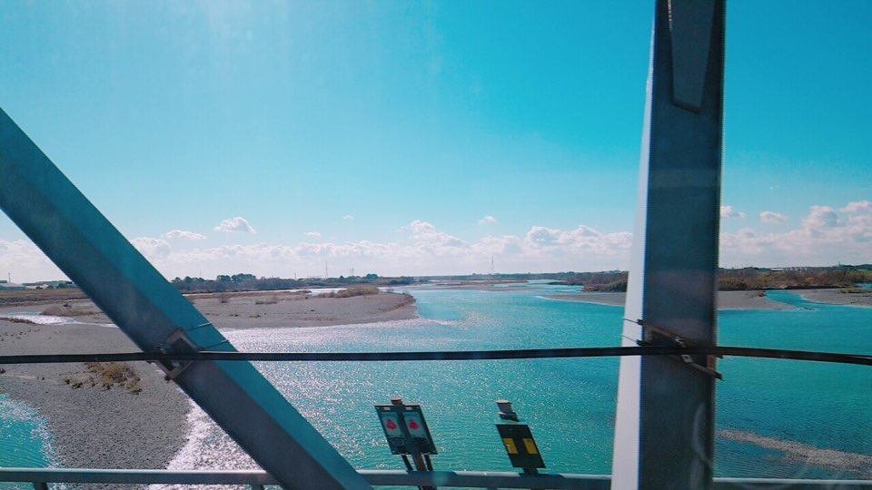

2017.01, 2017.07 - 오사카, 도쿄, 후쿠오카, 교토 여행
 
유후인에 위치하는 기린코 호수이다. 후쿠오카를 간다면 온천이 빠질 수가 없지 않는가. 그 온천을 제대로 즐기기 위해 가는 곳이 유후인인데, 료칸 가격이 상당히 비싸서 하룻밤 묵지는 못 하고 주변 경치를 구경하고 왔다.
 후쿠오카에 위치하는 아사히 공장을 견학했을 때 찍은 사진들이다. 견학은 당일 예약은 안 되기 때문에 그 전에 해야 하며, 견학 시 제조 과정과 역사, 개발 중인 것들을 소개해준다. 맨 마지막엔 개발하고 있는 맥주를 시음할 수 있게 해준다. 아직 시중엔 나오지 않은 것 같다.
교토에 위치하는 금각사이다. 교토 자체가 역사를 담고 있는 공간이라고 할 수 있어, 들르지 않을 수 없는 명소 중 하나이다. 부적(?)을 태워 소원을 빌 수 있는 곳도 있다.
오사카를 방문한다면 필수적으로 가는 도톤보리이다. 오사카를 다녀온 사람 중에 이 곳을 안 다녀온 사람은 단 한 명도 없다. 오꼬노미야끼, 타코야끼, 라멘 등 일본을 대표하는 음식들은 모두 팔며, 다양한 상점들이 있다. 낮보다는 밤에 가는 것을 추천하며, 야경이 정말 이쁘다. 가면 일본어보다 한국어가 더 많이 들릴만큼 한국인도 많다.
Universal Studio Osaka 이다. 다양한 놀이기구들이 있으며, 세계에서 유명한 테마 파크이다. 우리 나라 테마 파크와 다를 것 없이 프리패스를 구매하면 자유롭게 이용할 수 있으며, 스릴감 넘치는 놀이기구들이 우리 나라보다 훨씬 많아 색다른 체험을 할 수 있다.
신칸센을 타고 도쿄로 이동하는 중에 찍은 사진으로, 너무 아름답게 찍혀서 넣어봤다.